SubbieBill
SubbieBillSubbieBill › Ajuda
Como criar uma fatura no SubbieBill
Atualizado em 25 de outubro de 2026
Cada tela, cada botão. Os quadros laranja e os números mostram exatamente onde tocar. A primeira configuração leva uns 2 minutos; depois, uma fatura leva uns 30 segundos.
Os nomes dos botões são os do app em português. A fatura em PDF é sempre em inglês.
Configure sua conta (só uma vez)
1Abra o SubbieBill
Acesse subbiebill.com no celular ou no computador e toque em Criar minha primeira fatura.
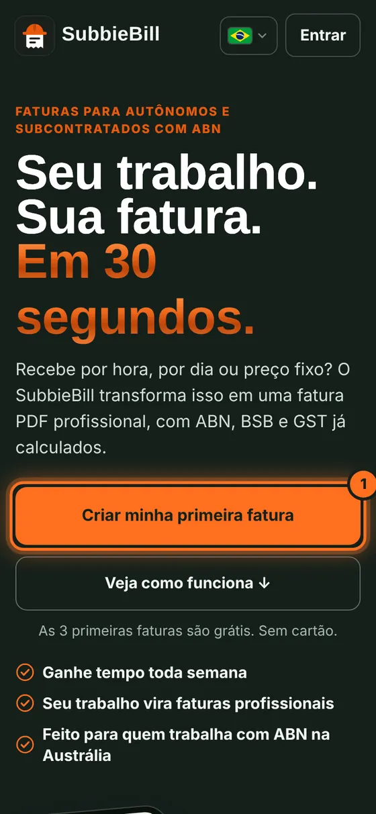
2Crie sua conta
Toque em Criar conta no topo (ou preencha primeiro seu trabalho: o SubbieBill pede uma conta ao finalizar). Digite seu email, escolha uma senha, digite de novo e toque em Criar minha conta grátis. Já tem conta? Toque em Entrar no topo.
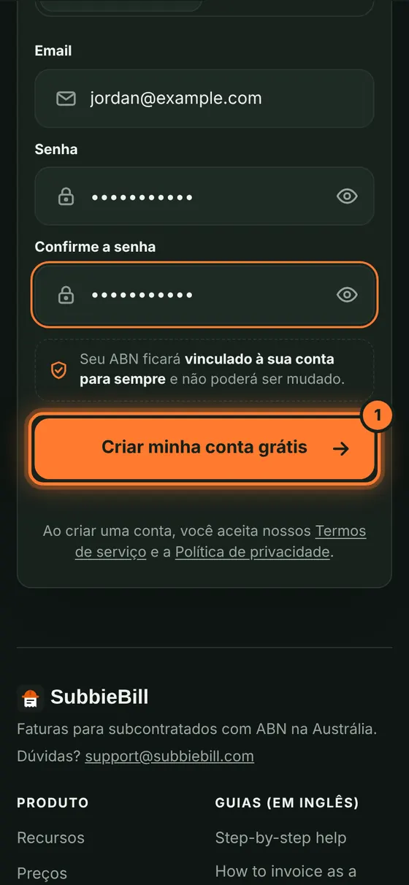
3Confirme seu email
Você recebe um código de 6 dígitos por email de noreply@subbiebill.com. Digite (1) e toque em Confirmar meu email (2). Não chegou? Veja o spam.
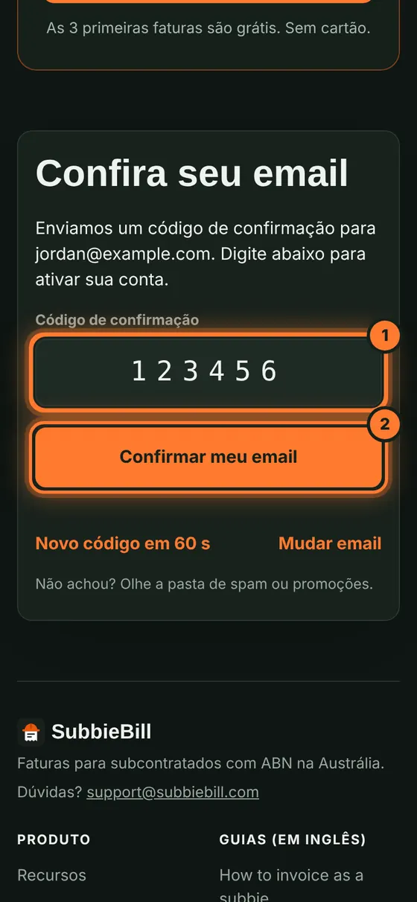
4Adicione nome e ABN
Em Meus dados, digite Nome, Sobrenome e ABN, e toque em Confirmar meu ABN. Confira o número e toque em Sim, continuar. O ABN fica vinculado à sua conta.
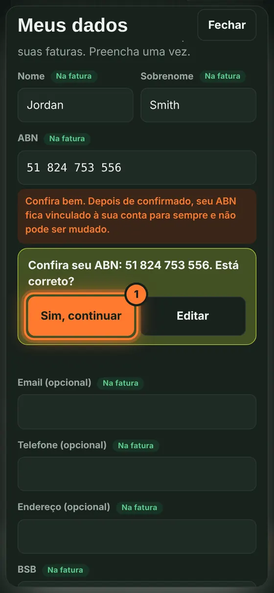
5Adicione banco e GST
Digite seu BSB (1) e o Número da conta (2) para o cliente saber onde pagar. Em GST, escolha Não registrado ou Registrado no GST (3). Depois toque em Pronto.
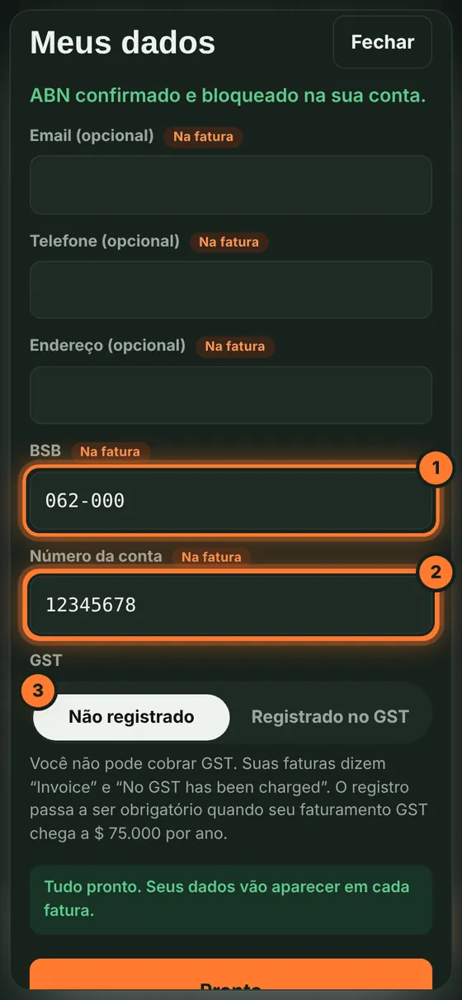
Faça uma fatura
6Escolha o cliente e o período
Em Cliente, digite a empresa que você fatura (1). Escolha Semana, 2 semanas ou Mês (2). Da próxima vez, escolha o cliente na lista.
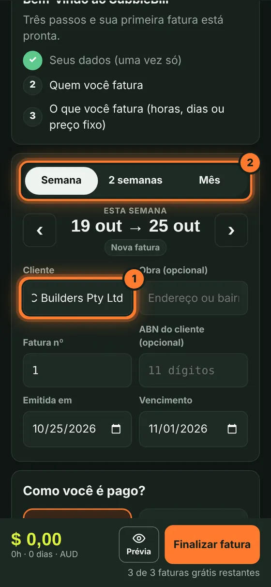
7Escolha como você é pago
Em Como você é pago?, toque em Por hora (1), Por dia (2), Fixo semanal (3) ou Preço fixo (4). Os próximos passos mostram Por hora. Por dia: informe sua diária e toque nos dias trabalhados. Valor ou preço fixo: digite o valor.
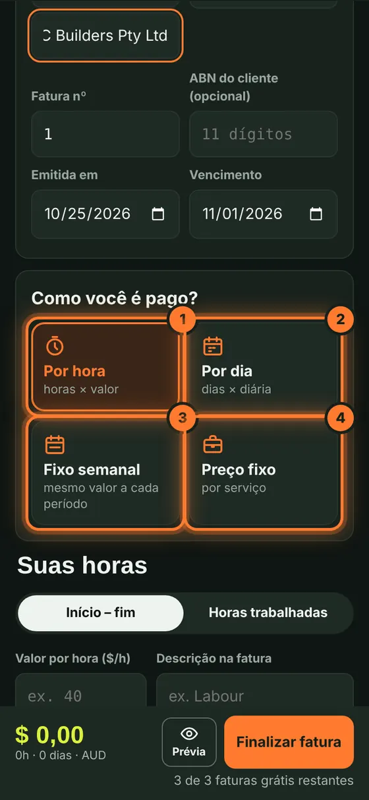
8Defina seu valor por hora
Digite seu Valor por hora ($/h). Ele fica salvo para as próximas faturas.
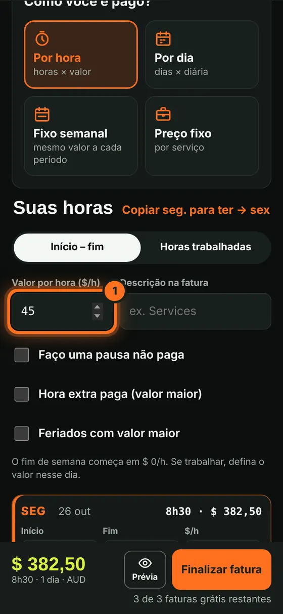
9Informe suas horas
Com Início – fim selecionado, escolha o início (1) e o fim (2) da segunda-feira. Toque em Copiar seg. para ter → sex (3) para preencher a semana e ajuste os dias diferentes.
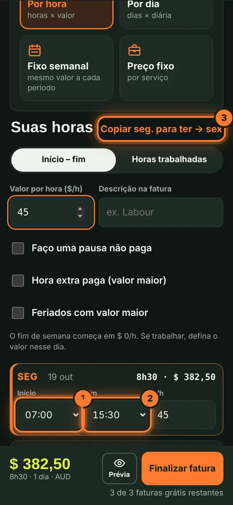
10Finalize a fatura
Confira o total embaixo e toque em Finalizar fatura. Toque em Prévia se quiser ver o PDF antes.
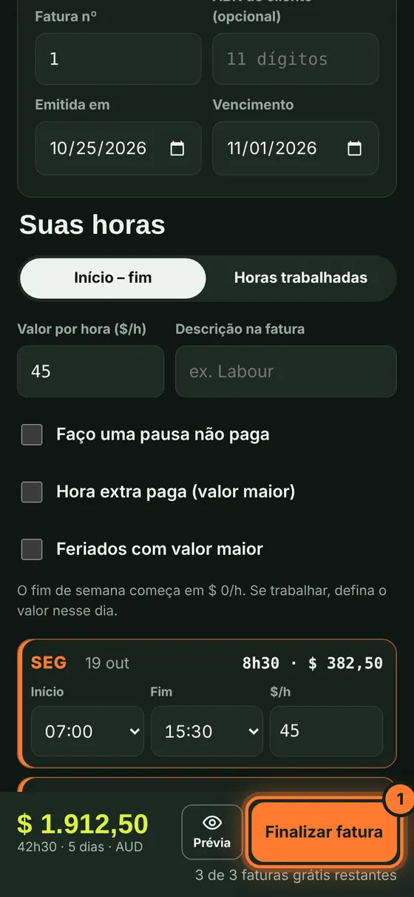
11Confira e baixe
Confira o resumo e toque em Finalizar e baixar PDF. A fatura recebe seu número e o PDF é baixado.
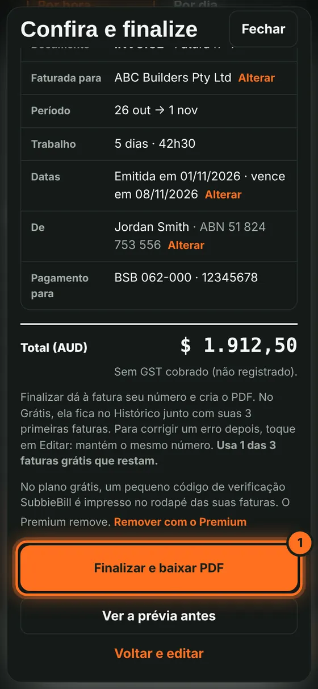
Depois da fatura
12Envie ao cliente
Toque em Enviar ao cliente (1) para enviar por email, ou em Baixar PDF (2) para salvar o PDF e enviar você mesmo.
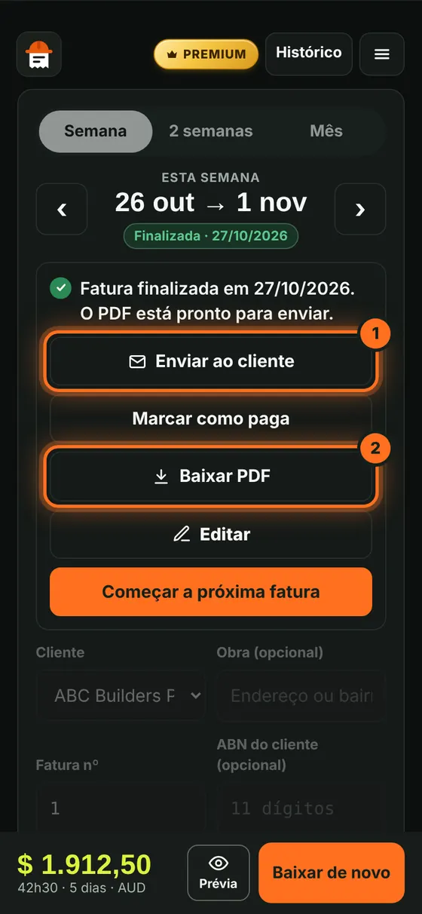
13Envio por email (Premium)
Digite o email do cliente (1) e toque em Enviar (2). Você recebe uma cópia e a resposta do cliente chega para você.
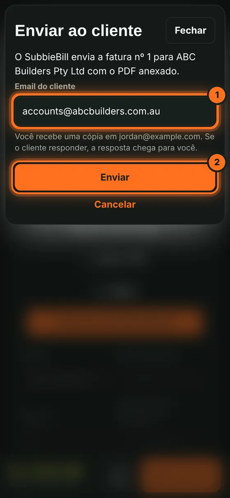
14Acompanhe suas faturas
Toque em Histórico no topo para ver todas as faturas e seus totais. Quando receber, toque em Marcar como paga.
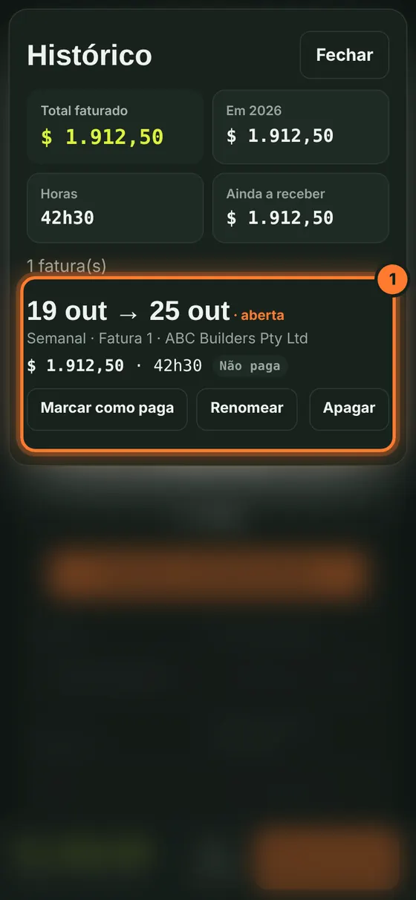
15Convide um amigo
Toque no menu (☰) no canto superior direito e depois em Convidar um amigo.
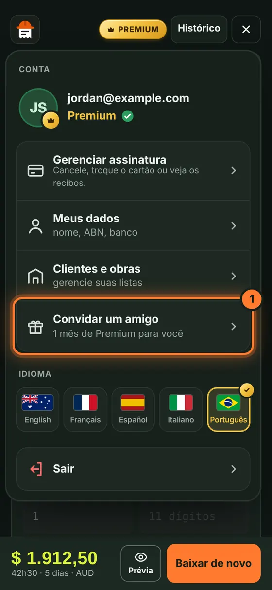
16Compartilhe seu link
Toque em Copiar e envie o link. Seu amigo ganha 1 fatura grátis a mais; você ganha 1 mês de Premium quando ele assinar.
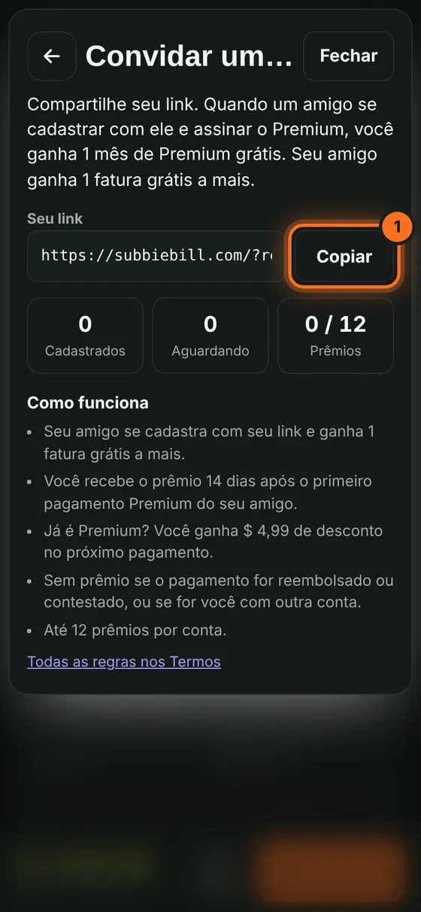
Respostas rápidas
Quanto custa?
Suas 3 primeiras faturas finalizadas são grátis. O Premium custa A$4,99 por mês ou A$39 por ano: faturas ilimitadas, envio por email e histórico completo.
Posso mudar meu ABN depois?
Não. Depois de confirmado, seu ABN fica vinculado à sua conta para sempre. Confira com cuidado.
Não recebi o código por email.
Espere um minuto e veja o spam ou promoções. O email vem de noreply@subbiebill.com. Você pode pedir um novo código depois de 60 segundos.
Posso corrigir um erro depois de finalizar?
Sim. Abra a fatura e toque em Editar. Ela mantém o mesmo número.